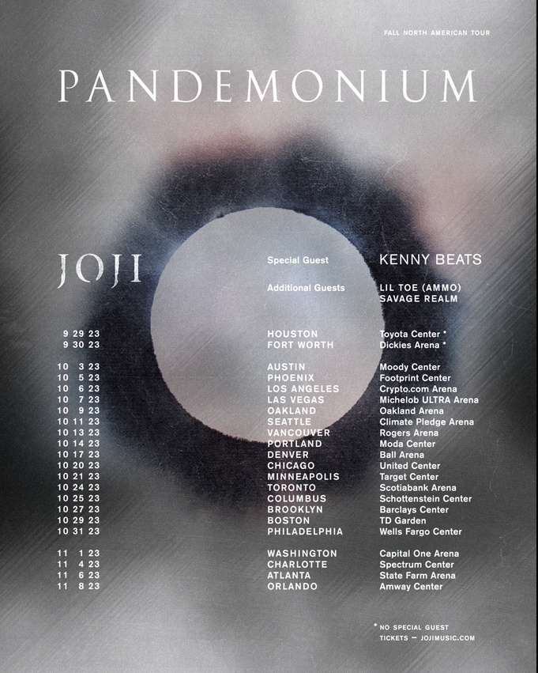

Joji's New Single "Smithereens" Drops Today
Joji has just released a new single, "Smithereens." This exciting release follows his previous hits and is expected to be a major success.

Read the full article here.
Joji has just released a new single, "Smithereens." This exciting release follows his previous hits and is expected to be a major success.
Read the full article here.
Joji's latest music video for "Glimpse of Us" has just dropped. The visually stunning video has been receiving rave reviews from fans and critics alike.
Joji has announced a world tour to support his new album. Check out the tour dates and get your tickets while they last!
The first song from 88rising's collaborative project has arrived!
The first track is "Midsummer Madness" and it holds true to its title. This is breezy, blissful music primed for your summer playlists.

Read full article here...
88rising's Head in the Clouds Festival is back. This year's headliners include label signees Rich Brian, NIKI, Dumbfoundead, and Joji.

Read full article here...